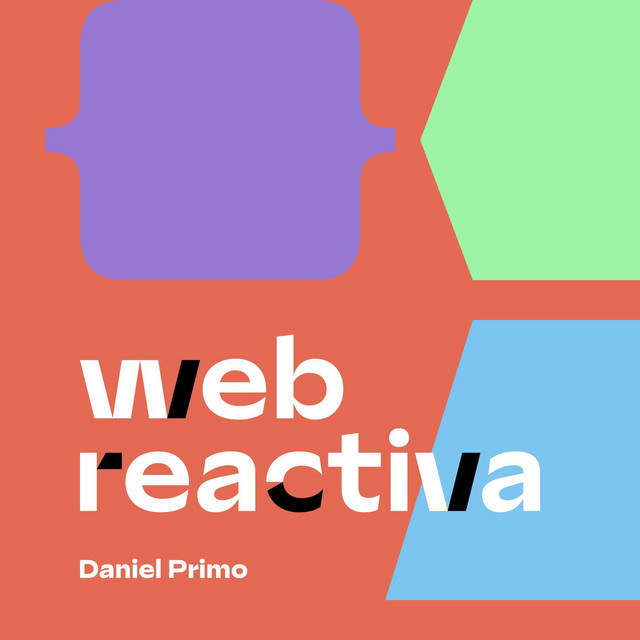

Podcasts
Podcasts relacionats amb programació web
Episodi 27 - Desenvolupament web amb HTML5
Episodi de La Tecnologia Para Todos realitzat per Luis del Valle i Alfonso Contreras
Episodi 23 - Com començar en el desenvolupament web

Episodi de Web Reactiva realitzat per Daniel Primos
Episodi 109 - El que (no) necessites en el desenvolupament web
Episodi de Web Reactiva realitzat per Daniel Primos